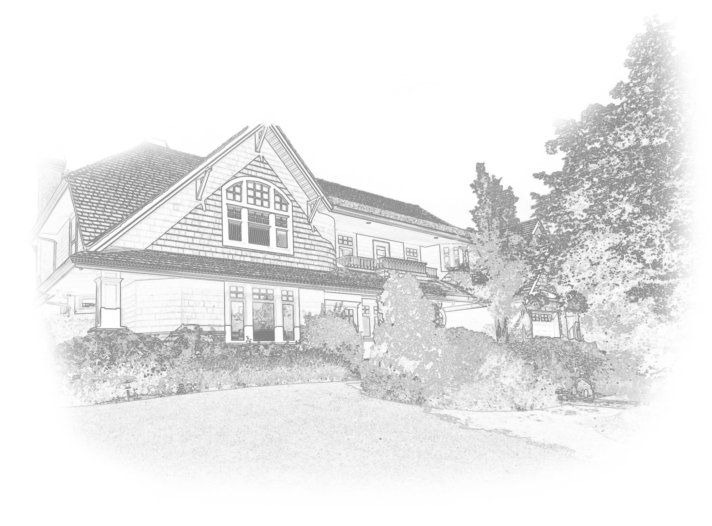

Roof replacement of residential house may take up to 2-3 days.

Browns Mills
Siding, Roofing and Windows

We are a construction company based in Browns Mills, NJ, that specializes in providing professional siding, roofing, and window installation and replacement services in Browns Mills, NJ. Our contractors have been in business for a significant period, and they know their way around providing flawless work in the mentioned areas.
Long lasting and cost-effective metal roofing installation and replacement services are available at our company that doesn't just increase the functionality of the roof of your house, but also add to the aesthetics of your home.
We provide cedar roofing installation and replacement services at our company in Browns Mills, NJ. Cedar is a solid material that makes perfect roofing for your house.
James Hardie Siding is a smart choice made by homeowners when siding material is concerned. A lot of people choose this option as it increases the aesthetics as well as the functionality of the house.
Stucco removal is essential for your house as it can have significant negative impacts on the house and the people living in it. Professional stucco removal services are available at our company in Browns Mills, NJ.
Fiberglass windows are the right blend of metal and plastic, which significantly increase the functionality of your house. They are long-lasting and can service harsh climates outside while you and your family are safe inside.
Now get affordable wooden window installation and replacement services at our company in Browns Mills, NJ. We have a wide variety of colors and designs for you to choose from.
This is a collection of the most common questions. We will be glad to hear from you and answer all of your questions if this FAQ didn't help you. Contact us by any method provided on a contact page.
Roof replacement of residential house may take up to 2-3 days.
The answer to this question depends on your choice and type of the regions your house is in. Both types of roofing are great. They have their advantages and disadvantages. You can read about them and choose the one that suits your house the best.
James Hardie siding is made with unique Hardie boards that are made of fiber cement. These boards provide numerous benefits to James Hardie siding.
Stucco appearance can cause infestation or unwanted organisms and microorganisms that are bad for health. It also causes excess cracking and shedding, which can trigger allergies and respiratory conditions.
Browns Mills team performed a replacement of my house siding. This contractor was recommended to me by a friend who also had positive experience with them. And as result - I am pleased with my new siding.
Mervin D. Labrie
The windows were replaced within one day, at the end of the installation my territory
was cleaned of debris. I'm glad I found this contractor.
Sung C. Albert
Professional guys. To be honest - its the first time I see so friendly and top notch
team of installers. Recommended.
Eric D. Murillo